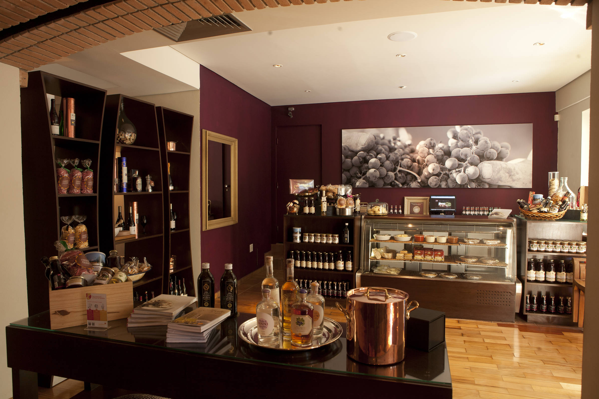
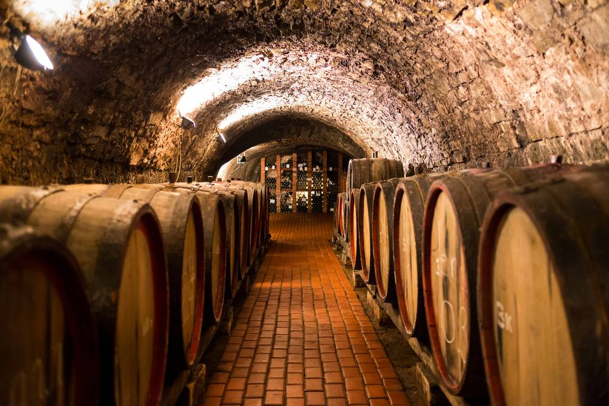

Nossa História
A Vinheria Agnello começou com a paixão da nossa família em selecionar os melhores vinhos para cada ocasião. Desde a fundação, buscamos trazer rótulos especiais de pequenos e grandes produtores, sempre priorizando a qualidade e o bom atendimento aos nossos clientes.
Nosso objetivo é transformar a escolha do vinho em uma experiência simples e agradável, seja para um jantar no fim de semana ou para presentear alguém especial.
Nossos Diferenciais
Trabalhamos com curadoria própria para garantir que cada garrafa do nosso catálogo entregue excelente qualidade e preço justo. Além disso, nossa equipe está sempre disponível para indicar a melhor harmonização para o seu prato.
Garantimos entrega rápida, embalagens seguras e um atendimento próximo para tirar qualquer dúvida sobre nossos produtos.
Armazenagem Controlada
Todos os nossos vinhos são guardados em ambiente com temperatura e umidade monitoradas constantemente. Esse cuidado evita a degradação da bebida e preserva todo o sabor, aroma e características originais da vinícola até chegar à sua mesa.
Conheça Nossa Vinheria
Galeria


